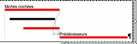
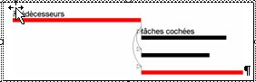
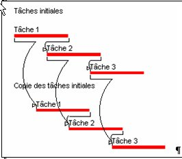
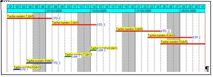
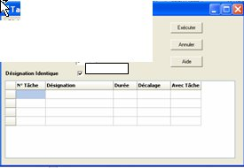

3 Les traitements et les démarches utilisant les tâches cochées
Dans le logiciel Ecoplanning la démarche tâche cochée est très utilisée dans les divers traitements qu'elle facilite et rend plus rapide. Elle offre la possibilité de sélectionner (cocher) des éléments et de faire un ou plusieurs traitements relatifs à ces éléments cochés.
3.1 Comment cocher décocher supprimer les tâches cochées
3.2 Lier une tâche avec plusieurs prédécesseurs
3.3 -Lier une tâche avec plusieurs successeurs
3.4 Délier des tâches entre-elles
3.5 Recopier un groupe de tâches cochées
3.6 Calendrier
3.7 Affecter à une tâche cochée une ou plusieurs tâches amont
3.8 Affecter données aux tâches cochées
3.9 Compléter la désignation de tâches cochées
3.10 - Affecter un code de sélection à une tâche
3.1 Comment cocher décocher supprimer les tâches cochées
Nota Ces commandes peuvent être aussi utilisées à partir du menu contextuel de l'onglet " Saisie Prévisionnelle)
3.1.1 Cocher toutes les tâches
3.1.2 Décocher tous les tâches
3.1.3 Cocher décocher tâches
3.1.4 Supprimer éléments cochés
3.1.1 Cocher toutes les tâches
Cette commande, obtenue à partir du menu " Cocher " ou du menu contextuel du volet saisie de l'onglet, permet de cocher toutes les tâches visualisées dans les volets de saisie des onglets.
3.1.2 Décocher tous les tâches
Cette commande, obtenue à partir du menu " Cocher " ou du menu contextuel du volet saisie de l'onglet, permet de décocher toutes les tâches visualisées dans les volets de saisie des onglets.
3.1.3 Cocher décocher tâches
Cette commande, obtenue à partir du menu " Cocher " ou du menu contextuel du volet saisie de l'onglet permet, dans les volets de saisie des onglets, de décocher toutes les tâches cochées et de cocher les autres visualisées.
3.1.4 Supprimer éléments cochés
Cette commande, obtenue à partir du menu " Cocher " ou du menu contextuel du volet saisie de l'onglet, permet de supprimer toutes les tâches visualisées dans les volets de saisie des onglets
.
La boîte de dialogue "Confirmer effacement" apparaît vous devrez le confirmer
3.2 Lier une tâche avec plusieurs prédécesseurs
- faites défiler les tâches,
- cochez, avec la souris, les tâches que vous désiriez affecter comme prédécesseurs à celle-ci,
- placez-vous devant cette tâche.
- choisissez Menu "cocher ", puis "affecter prédécesseurs aux tâches cochées ".
- confirmer cliquez sur "exécuter ",

Cette tâche va être liée avec tous ses prédécesseurs, sa date de début sera celle imposée par son ou ses prédécesseurs les plus contraignants (voir visualisation dans la colonne "déb prévis possible ").
Pour commencer cette tâche plus tôt, dans la colonne "décalage " vous choisirez le décalage négatif nécessaire avec son ou ses prédécesseurs les plus contraignants.

3.3 -Lier une tâche avec plusieurs successeurs
- faites défiler les tâches, et cochez, avec la barre d'espacement, les tâches que vous désiriez
- affecter comme prédécesseurs à celle-ci,
- placez-vous devant cette tâche.
- choisissez Menu "cocher ", puis "affecter successeurs aux tâches cochées ".
confirmer cliquez sur "exécuter
<
3.4 Délier des tâches entre-elles
- Cochez toutes les tâches que vous voulez délier avec la barre d'espacement.
- Menu "Cocher", commande "Délier les tâches cochées",
- Ou utilisez le bouton "délier tâches cochées "
Tous les liens entre ces tâches cochées vont être supprimés, sauf les liens avec les autres tâches non cochées
3.5 Recopier un groupe de tâches cochées
Avec le logiciel Ecoplanning vous avez deux possibilités de recopier les tâches :
- 3.5.1 Possibilité de recopie simple d'un groupe de tâches cochées
- 3.5.2 Possibilité de recopie en cascade d'un groupe de tâches cochées
Même démarche, mais en plus on crée, en plus, des liens (fd et décalage 0) entre les tâches identiques initiales cochées et des tâches recopiées
3.5.1 Possibilité de recopie simple d'un groupe de tâches cochées
On doit établir un planning d'une construction similaire, mais indépendante entre-elles (exemple une à Lyon, l'autre à Bordeaux)
On saisira les données de la construction de la première (en principe la plus complète). On liera les tâches entre-elles, on affectera à chacune un code critère par exemple un code intervenant, c'est-à-dire celui qui va réaliser cette tâche.
On recopier ces tâches, (sans l'option en cascade ci-après), on affectera à toutes celles-ci (cochées) un code de localisation. On saisira la date de début de cette deuxième construction et on affinera si nécessaire les données de ces tâches.
3.5.2 Possibilité de recopie en cascade d'un groupe de tâches cochées
On doit établir le planning de constructions similaires dont les exécutions se suivent (exemple un groupe de
Présentation de la recopie en cascade

- Cochez les tâches de la première construction
- Menu "Cocher" commande "Copier les tâches cochées " dans la boîte de dialogue qui apparaît.
Assurez-vous que la case "Copie en cascade"est cochée. Cette case, lorsqu'elle est cochée,
permet de lier les nouvelles tâches avec les anciennes, avec le type lien DF (Fin / Début
et un décalage (nul) par défaut.
- Cliquez sur le bouton "Exécuter" pour valider.
Les nouvelles tâches sont insérées à la fin de la table. Elles auront la même désignation et la même durée que les
anciennes tâches.
Les tâches de la deuxième construction commenceront après la fin de la tâche identique de la Première construction
Remarque importante
Le traitement "Recopier lestâches cochées" est souvent suivi par l'un ou les
deux traitements ci-après :
- Compléter la désignation des tâches cochées"
- Affecter données aux tâches cochées".
Nous allons recopier notre exemple 4 fois les tâches de notre exemples pour obtenir les structure de 4 pavillons (pavillon A - pavillon B pavillon C pavillon D°.°
- voir au chapitre ----l'affection aux tâches d'un même critère de localisation
- voir au chapitre ----l'affection aux tâches d'un complément de désignation aux tâches.
On affinera si nécessaire les données des tâches d'un projet (Les durées d'exécution des tâches peuvent être différentes : par exemple entre un pavillon de 5 pièces et un de 7 pièces).
3.6 Affecter calendrier aux tâches cochées
3.6.1- Affecter calendrier aux tâches cochées
3.6.2- Choisir un calendrier
3.6 3 Créer un nouveau ou modifier un calendrier
3.6 1 Affecter différents calendriers aux tâches cochées
Lors de la création d'un projet, le calendrier qui sera pris en compte, pour toutes les tâches, correspond au calendrier standard qui est pris par défaut
.
Pour modifier le choix du calendrier de certaines tâches, procéder comme suit :
- Cocherez les tâches concernées,
"
- Utiliser le Menu " Cocher " choisir " Calendrier" ou le menu contextuel "affecter calendriers aux tâches cochées "
- " Dans la boîte de dialogue qui apparaît."Affecter calendrier aux tâches cochées " sélectionner un des
quatre autres calendriers 'celui qui répond a votre besoin).
"
- Puis vous confirmerez ce choix, ces tâches dépendront de ce calendrier..
3.6.2- Choisir un calendrier
Vous pourrez affecter aux tâches d'un projet plusieurs calendriers
Pour la majorité des tâches c'est le calendrier, standard de base, une durée légale imposé
par la loi et règlement et exprimée en jours calendaires dans celui-ci sont neutralisés
les week-ends et jours fériés,
C'est ce calendrier de base celui qui est pris en compte dès que vous choissez nouveau projet.
On peut créer un autre calendrier, par exemple le calendrier ou l'on travail les 7 jours ou durée d'une consultation pour un type de marchéqui est exprimée en jours calendaires.
3.6.3- Créer un nouveau ou modifier un calendrier
Utiliser le Menu " Outils " choisir " Calendrier"
Cette boîte de dialogue qui permet de paramétrer tous les jours en travaillés et non travaillés en vue d'établir un
calendrier spécifique pour un type d'opération donné.
Dans la boîte de dialogue "Calendrier" la démarche va être la suivante:Choix des Wend-End
Pour modifier les Week-ends : dans la zone d'options
cliquer sur la touche " Générer Nouveau Wend-End
- sélectionner ou "désélectionner" un jour dans la liste
- cliquer sur ce dernier pour avoir un jour Wend-End.
En fonction de ce choix dans la liste des jours par mois
le choix Wend-End va apparaître.
Visualisation de l'année et du mois dans la liste des jours par mois
- Utiliser les boutons et Année Suivante>
- les boutons Mois Précédent et Mois PSuivant
pour se déplacer dans le calendrier et visualiser le mois souhaité (le mois de septembre dans l'exemple).
Choix des jours Travaillés JT ou Non Travaillés NT dans la liste des jours par mois
- Utiliser la barre de défilement vertical pour parcourir le mois sélectionné.
- Pour modifier le type des jours Travaillé JT ou NonTravaillé NT :Sélectionner les jours que vous souhaitez définir comme travaillés ou non travaillés.
- Cliquer sur les jours concernés l'option contraire va être pris en compte
exemple si le jour était jour NonTravaillé NT il deviendra jours Travaillé JT et vice et versa.
Dès que toutes les modifications seront effectuées vous les sauvegarderez en cliquant sur la touche " Sauver et Quitter ""
3.7 Affecter à une tâche cochée une ou plusieurs tâches amont
A fin de maîtriser un projet il faut au départ bien appréhender et mettre en évidence sa structure. il s'ensuit de différencier ces tâches de structures des autres.
Dans cet optique dans Ecoplanning on va traiter différemment certaines qui ne sont pas directement impliquées dans la structure mais seulement rattachées à une tâche de celle-ci les tâches amont de cette dernière.
Exemple les tâches amonts d'une tâche de la structure du projet (dite tâche mère) peuvent être :
les accords les études les approvisionnements nécessaire d'avoir ou d'obtenir pour au commencer une tâche, des contraintes extérieures au projet
Pour présenter la création des tâches amonts d'un projet on utilise ci-après un petit réseau voir visualisation du Gantt ci-dessous obtenu à partir du fichier " taches amonts" de la version 5.0
La visualisation dans le Gantt ci-dessous de 4 tâches amont
Dans un réseau de tâches, on peut pour une tâche donnée dans l'exemple la tâche n°3 crée en amont de celle-ci
plusieurs tâches : les 6-7-8-9

Ces tâches seront liées à cette tâche mère . si celle-ci se déplace dans l'échelle du temps
en amont ou en aval les tâches créées suivront.
Dans un premier temps on coche la tâche concernée dont désire créer des tâches amont la n° 3
" on clique dans le petit rectangle situé a gauche.
Dans un deuxième temps on utilise l'option " créer tâches amont "du menu " tâches cochée "

Dans une boîte de dialogue on demande le nombre de tâche à créer 4 tâches. On peut créer jusqu'a 10 tâches avec la même désignation que la tâche mère
On devra successivement ensuite pour chacune :
" saisir sa désignation ou modifiée celle reconduite de sa tâche mère
" indiquer sa durée et son décalage
Dès que l'on cliqué sur " exécuter ", les tâches crées vont s'afficher derrières leur tâche mère.
Dans le volet table, elles seront classées par date de début au plus tôt décroissant,
Dans le volet Gantt ces tâches s'afficheront en amont de la tâche
Remarques
Si on supprime la tâche mère toutes ces tâches filles amont sont aussi supprimées
Si on supprime une de ces tâches filles amont sa précédentes et sa suivante seront liées
"
3.8 Affecter données aux tâches cochées
On utilise la commande " Affecter une donnée aux tâches cochées" du menu " Cocher "
Elle permet d'affecter une même donnée à tous les élément cochés. Elle affiche la boîte de dialogue
"Affecter données aux éléments cochés" :
- Cliquez sur la flèche orientée vers le bas de la liste pour la dérouler.
- Sélectionnez le champ souhaité.
- Saisissez la valeur à affecter dans la zone de saisie
- Cliquez sur exécuter
3.9 Compléter la désignation de tâches cochées
On utilise la commande " Compléter la désignation de tâches cochées" du menu " Cocher "
En particulier compléter la désignation des tâches.
Cette commande permet de rechercher et remplacer la valeur d'un champ (des éléments cochés) souhaité par une nouvelle valeur. Vous avez la possibilité de remplacer une partie du champ spécifié.
- Saisissez dans la zone de saisie , la valeur à remplacer pour le champ sélectionné.
- Saisissez la nouvelle valeur dans la zone de saisie supprimer " les données : dans - occurrence confirmation "
Cette commande peut être utilisée a la suite de la démarche recopier un groupe de tâches cochées
3.10 - Affecter un code de sélection à une tâche
Avec l'affectation d'une donnée aux tâches cochée (voir paragraphe 3.8 ) il est possible d'affecter à une tâche un code de sélection de 10 caractères alphanumériques.
- placez-vous devant cette tâche.
- déplacez-vous dans la colonne du champ désiré et cochée la
- saisissez un code de sélection pour un groupe de tâches cochées
Ceci permet une utilisation simple et plus rapide que la démarche avec les codes critères car on affecte pas un code st une désignation correspondante, mais seulement un simple code de sélection, d'ou l'interet pour la mise au point du projet.
De plus il possible de diviser un code en deux voire trois parties, pour augmenter les possibilités de sélection par filtres.
Exemple soit le code tâche : 10101S09P1 :
- 10101 est un code hiérarchique de la tâche,
- A09 est le code de secteur de la tâche,
- P1 est le code de priorité de la tâche.